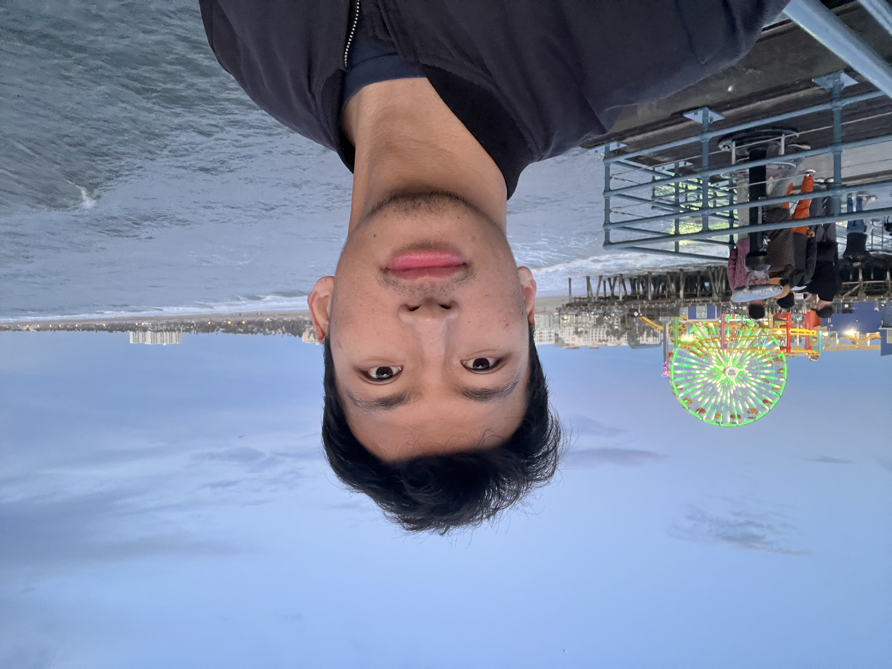

Ke Zhang
PhD Student in Mathematics • University of California, Riverside
Research Interests
- Gurobi optimization coding repair agent
- Lean4 autoformalization and theorem verification using AI agents
- Tool-augmented LLM reasoning, and tools effect analysis
- Car maintenence, oil change, rotor and brake pad change
Projects
-
Gurobi Code Repair Agent –
Wrote optimization problem use cases and unit tests, then ran them through an agent that automatically repairs buggy Gurobi code using a tool stack with RAG, code execution, and feedback loops.
-
Lean4 Autoformalization System –
Mathematical natural language statements → Lean4 code translation by agent method.
Contact
Email: kzhan153@ucr.edu